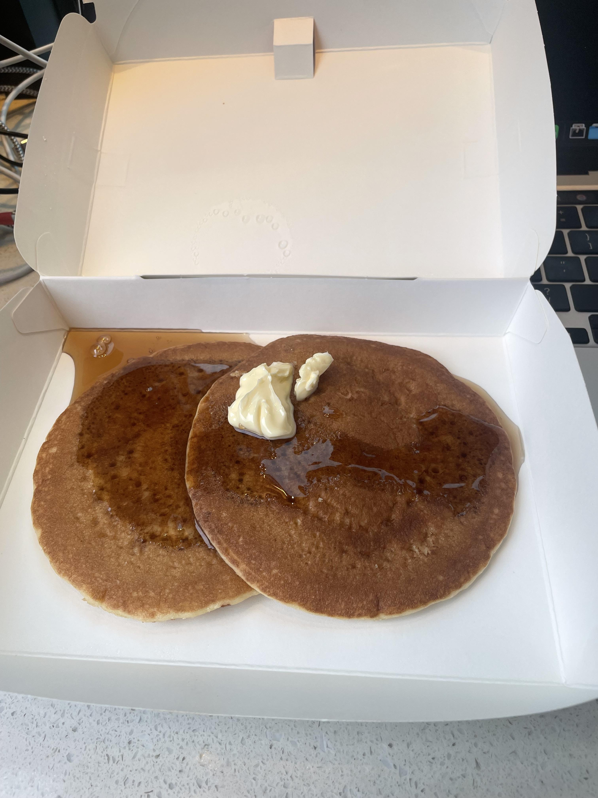
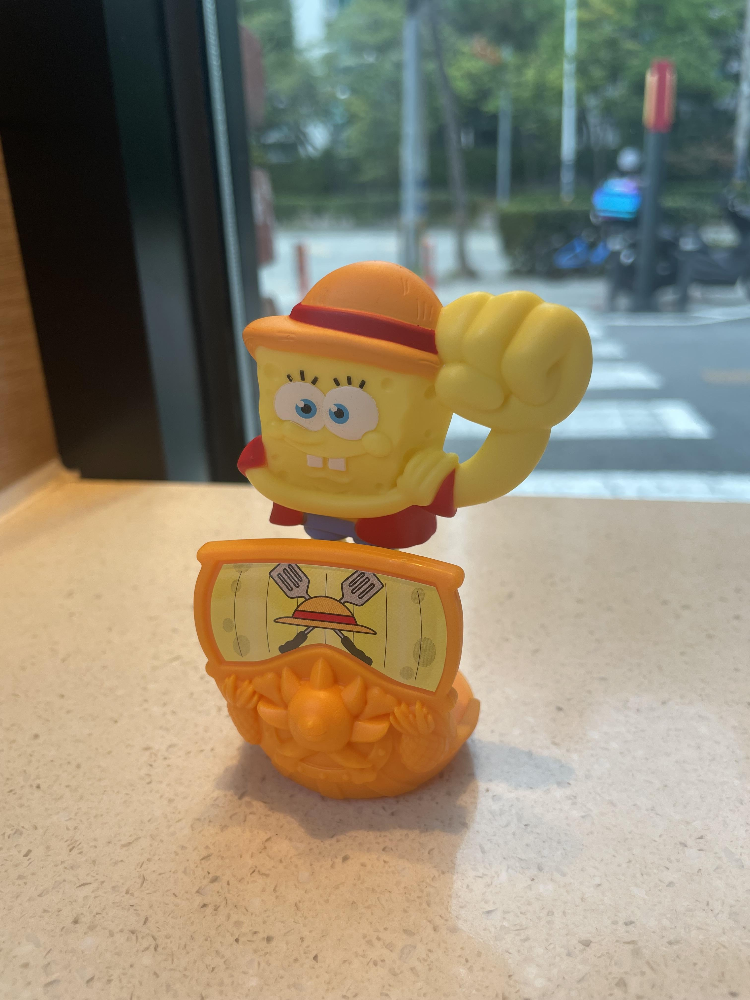
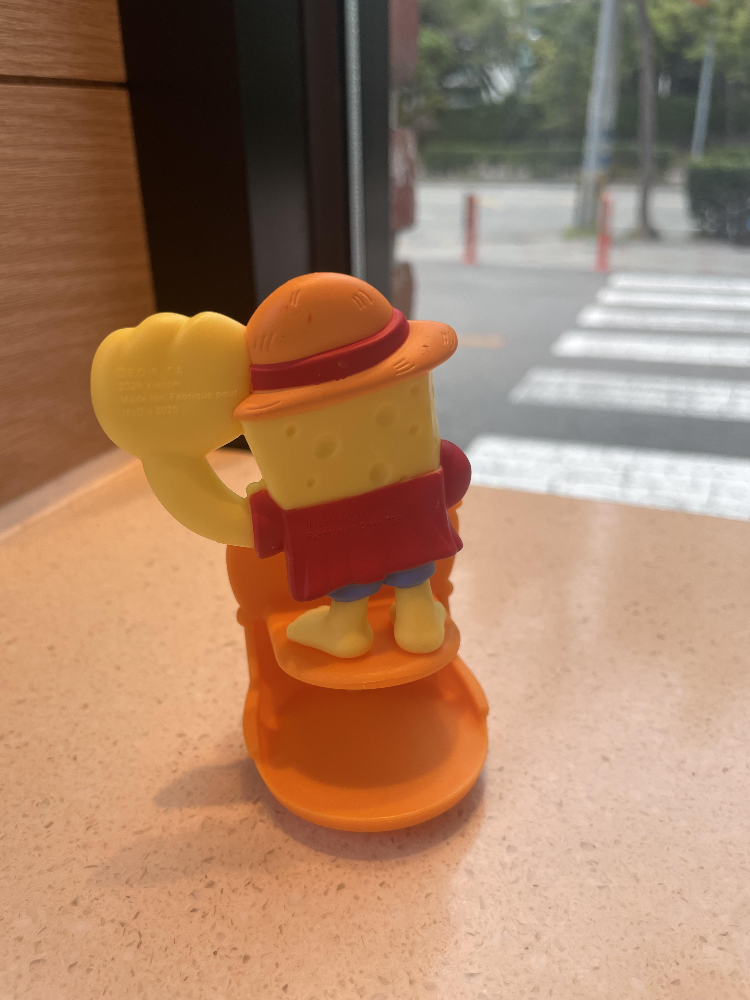
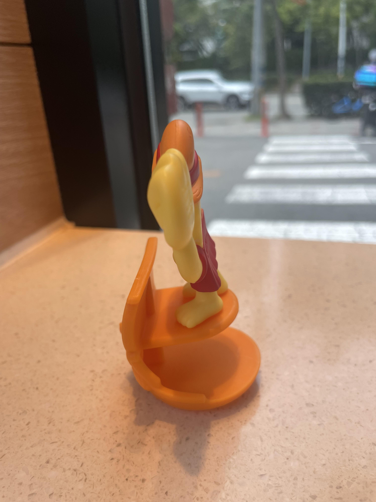
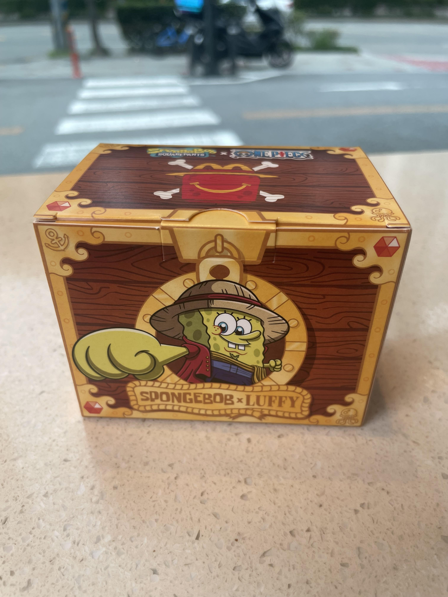
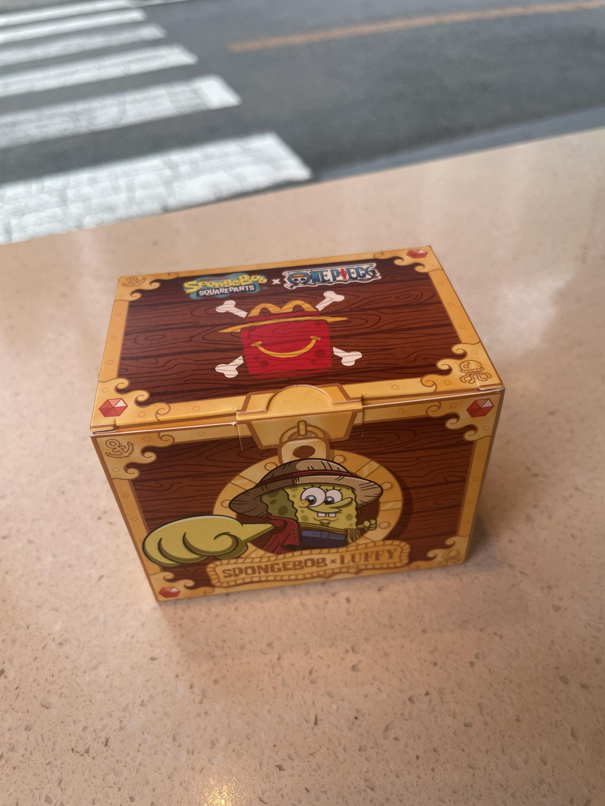

스펀지밥 별로 안좋아함
원피스 안봄
아들이 갖고싶어 해서 당분간 점심은 맥도날드 확정임
핫케익 맛있다






스펀지밥 별로 안좋아함
원피스 안봄
아들이 갖고싶어 해서 당분간 점심은 맥도날드 확정임
핫케익 맛있다
쓰니는 돼지아님.
그냥 돼지코스프레임 ㅇㅇ
내일 한시간 일찍 일어나서 맥날 먹고 출근해야겠다
돼지가 뭔지 몰라?
아침부터 눈버리게 하고싶지는 않다
멸치가 뭐래
오 굳
돼지런
멸치
기껏 생각해낸게
아들이 갖고싶어 X
내가 햄버거 먹고싶어 O
이제 7번 밖에 안남았어 ㅠㅠ
아니!!! 맥모닝 먹을줄 모르네!!!
이거 장난감 따로 구매하는거죵?
해피밀 안묵어봤나? 같이 줍니다
어릴때 말고 안묵어봐서
감삼당
맛나게 드세용
아니 팬케이크 두장먹어놓고 돼지라고?
*주의 음식이 사진에 보이는 것보다 많이 있음
배고파서 다 묵었어요
마! 핫케잌소스는 2개씩 뿌려먹어야 푹적셔서 먹을 수 있다. 너 가짜돼지구나..
해피밀이면 한번에 두세개씩 먹어야지
해시브라운.. 없다?